The marginaleffects package includes three flexible
functions to plot estimates and display interactions.
Those functions can be used to plot two kinds of quantities:
- Conditional estimates:
- Estimates computed on a substantively meaningful grid of predictor values.
- This is analogous to using the
newdataargument with thedatagrid()function in apredictions(),comparisons(), orslopes()call.
- Marginal estimates:
- Estimates computed on the original data, but averaged by subgroup.
- This is analogous to using the
newdataargument with thedatagrid()function in apredictions(),comparisons(), orslopes()call.
To begin, let’s download data and fit a model:
# libraries
library(ggplot2)
library(patchwork) # combine plots with the + and / signs
library(marginaleffects)
# visual theme
theme_set(theme_minimal())
okabeito <- c('#E69F00', '#56B4E9', '#009E73', '#F0E442', '#0072B2', '#D55E00', '#CC79A7', '#999999', '#000000')
options(ggplot2.discrete.fill = okabeito)
options(ggplot2.discrete.colour = okabeito)
options(width = 1000)
# download data
dat <- read.csv("https://vincentarelbundock.github.io/Rdatasets/csv/palmerpenguins/penguins.csv")
mod <- lm(body_mass_g ~ flipper_length_mm * species * bill_length_mm + island, data = dat)Predictions
Conditional predictions
We call a prediction “conditional” when it is made on a grid of user-specified values. For example, we predict penguins’ body mass for different values of flipper length and species:
pre <- predictions(mod, newdata = datagrid(flipper_length_mm = c(172, 231), species = unique))
pre
#>
#> Estimate Std. Error z Pr(>|z|) 2.5 % 97.5 % bill_length_mm island flipper_length_mm species
#> 3859 203.9 18.926 < 2.22e-16 3460 4259 43.92193 Biscoe 172 Adelie
#> 2545 368.9 6.898 5.2873e-12 1822 3268 43.92193 Biscoe 172 Gentoo
#> 3146 233.8 13.453 < 2.22e-16 2688 3604 43.92193 Biscoe 172 Chinstrap
#> 4764 362.1 13.156 < 2.22e-16 4054 5474 43.92193 Biscoe 231 Adelie
#> 5597 155.4 36.011 < 2.22e-16 5292 5901 43.92193 Biscoe 231 Gentoo
#> 4086 469.4 8.704 < 2.22e-16 3166 5006 43.92193 Biscoe 231 Chinstrap
#>
#> Prediction type: response
#> Columns: rowid, type, estimate, std.error, statistic, p.value, conf.low, conf.high, body_mass_g, bill_length_mm, island, flipper_length_mm, speciesThe condition argument of the
plot_predictions() function can be used to build meaningful
grids of predictor values somewhat more easily:
plot_predictions(mod, condition = c("flipper_length_mm", "species"))
Note that the values at each end of the x-axis correspond to the numerical results produced above. For example, the predicted outcome for a Gentoo with 231mm flippers is 5597.
We can include a 3rd conditioning variable, specify what values we
want to consider, supply R functions to compute summaries,
and use one of several string shortcuts for common reference values
(“threenum”, “minmax”, “quartile”, etc.):
plot_predictions(
mod,
condition = list(
"flipper_length_mm" = 180:220,
"bill_length_mm" = "threenum",
"species" = unique))
See ?plot_predictions for more information.
Marginal predictions
We call a prediction “marginal” when it is the result of a two step process: (1) make predictions for each observed unit in the original dataset, and (2) average predictions across one or more categorical predictors. For example:
predictions(mod, by = "species")
#>
#> species Estimate Std. Error z Pr(>|z|) 2.5 % 97.5 %
#> Adelie 3701 27.18 136.13 < 2.22e-16 3647 3754
#> Chinstrap 3733 40.51 92.15 < 2.22e-16 3654 3812
#> Gentoo 5076 30.12 168.53 < 2.22e-16 5017 5135
#>
#> Prediction type: response
#> Columns: type, species, estimate, std.error, statistic, p.value, conf.low, conf.highWe can plot those predictions by using the analogous command:
plot_predictions(mod, by = "species")
We can also make predictions at the intersections of different variables:
predictions(mod, by = c("species", "island"))
#>
#> species island Estimate Std. Error z Pr(>|z|) 2.5 % 97.5 %
#> Adelie Biscoe 3710 50.36 73.66 < 2.22e-16 3611 3808
#> Adelie Dream 3688 44.64 82.63 < 2.22e-16 3601 3776
#> Adelie Torgersen 3706 46.78 79.24 < 2.22e-16 3615 3798
#> Chinstrap Dream 3733 40.51 92.15 < 2.22e-16 3654 3812
#> Gentoo Biscoe 5076 30.12 168.53 < 2.22e-16 5017 5135
#>
#> Prediction type: response
#> Columns: type, species, island, estimate, std.error, statistic, p.value, conf.low, conf.highNote that certain species only live on certain islands. Visually:
plot_predictions(mod, by = c("species", "island"))
Comparisons
Conditional comparisons
The syntax for conditional comparisons is the same as the syntax for conditional predictions, except that we now need to specify the variable(s) of interest using an additional argument:
comparisons(mod,
variables = "flipper_length_mm",
newdata = datagrid(flipper_length_mm = c(172, 231), species = unique))
#>
#> Term Contrast Estimate Std. Error z Pr(>|z|) 2.5 % 97.5 % bill_length_mm island species
#> flipper_length_mm +1 15.33 9.252 1.657 0.097592 -2.806 33.46 43.92193 Biscoe Adelie
#> flipper_length_mm +1 51.73 8.696 5.948 2.7124e-09 34.683 68.77 43.92193 Biscoe Gentoo
#> flipper_length_mm +1 15.93 11.366 1.402 0.160935 -6.342 38.21 43.92193 Biscoe Chinstrap
#> flipper_length_mm +1 15.33 9.253 1.657 0.097606 -2.807 33.46 43.92193 Biscoe Adelie
#> flipper_length_mm +1 51.73 8.697 5.948 2.7171e-09 34.682 68.77 43.92193 Biscoe Gentoo
#> flipper_length_mm +1 15.93 11.366 1.402 0.160953 -6.343 38.21 43.92193 Biscoe Chinstrap
#>
#> Prediction type: response
#> Columns: rowid, type, term, contrast, estimate, std.error, statistic, p.value, conf.low, conf.high, predicted, predicted_hi, predicted_lo, body_mass_g, bill_length_mm, island, flipper_length_mm, species, eps
plot_comparisons(mod,
variables = "flipper_length_mm",
condition = c("bill_length_mm", "species"))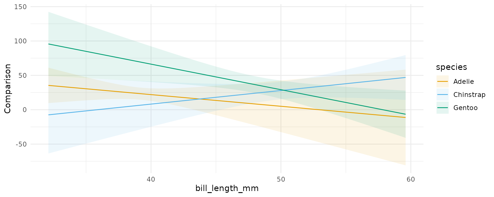
We can specify custom comparisons, as we would using the
variables argument of the comparisons()
function. For example, see what happens to the predicted outcome when
flipper_length_mm increases by 1 standard deviation or by
10mm:
plot_comparisons(mod,
variables = list("flipper_length_mm" = "sd"),
condition = c("bill_length_mm", "species")) +
plot_comparisons(mod,
variables = list("flipper_length_mm" = 10),
condition = c("bill_length_mm", "species"))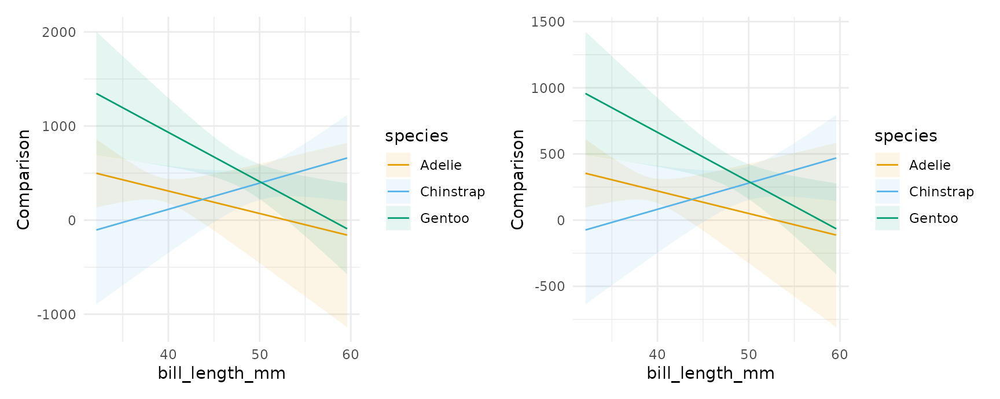
Notice that the vertical scale is different in the plots above, reflecting the fact that we are plotting the effect of a change of 1 standard deviation on the left vs 10 units on the right.
Like the comparisons() function,
plot_comparisons() is a very powerful tool because it
allows us to compute and display custom comparisons such as differences,
ratios, odds, and arbitrary functions of predicted outcomes. For
example, if we want to plot the ratio of predicted body mass for
different species of penguins, we could do:
plot_comparisons(mod,
variables = "species",
condition = "bill_length_mm",
transform_pre = "ratio")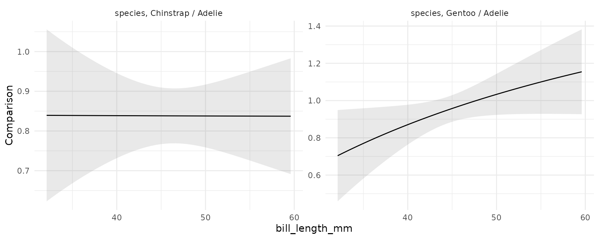
The left panel shows that the ratio of Chinstrap body mass to Adelie body mass is approximately constant, at slightly above 0.8. The right panel shows that the ratio of Gento to Adelie body mass is depends on their bill length. For birds with short bills, Gentoos seem to have smaller body mass than Adelies. For birds with long bills, Gentoos seem heavier than Adelies, although the null ratio (1) is not outside the confidence interval.
Marginal comparisons
As above, we can also display marginal comparisons, by subgroups:
plot_comparisons(mod,
variables = "flipper_length_mm",
by = "species") +
plot_comparisons(mod,
variables = "flipper_length_mm",
by = c("species", "island"))
Multiple contrasts at once:
plot_comparisons(mod,
variables = c("flipper_length_mm", "bill_length_mm"),
by = c("species", "island"))
Slopes
If you have read the sections above, the behavior of the
plot_slopes() function should not surprise. Here we give
two examples in which we compute display the elasticity of body mass
with respect to bill length:
# conditional
plot_slopes(mod,
variables = "bill_length_mm",
slope = "eyex",
condition = c("species", "island"))
# marginal
plot_slopes(mod,
variables = "bill_length_mm",
slope = "eyex",
by = c("species", "island"))
And here is an example of a marginal effects (aka “slopes” or “partial derivatives”) plot for a model with multiplicative interactions between continuous variables:
mod2 <- lm(mpg ~ wt * qsec * factor(gear), data = mtcars)
plot_slopes(mod2, variables = "qsec", condition = c("wt", "gear"))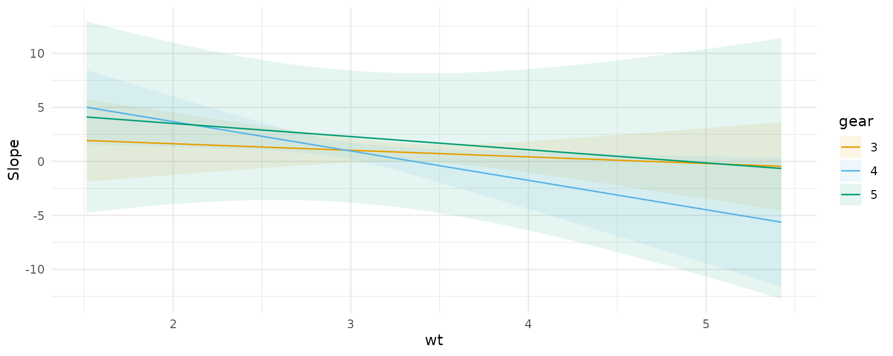
Uncertainy estimates
As with all the other functions in the package, the
plot_*() functions have a conf_level argument
and a vcov argument which can be used to control the size
of confidence intervals and the types of standard errors used:
plot_slopes(mod,
variables = "bill_length_mm", condition = "flipper_length_mm") +
ylim(c(-150, 200)) +
# clustered standard errors
plot_slopes(mod,
vcov = ~island,
variables = "bill_length_mm", condition = "flipper_length_mm") +
ylim(c(-150, 200)) +
# alpha level
plot_slopes(mod,
conf_level = .8,
variables = "bill_length_mm", condition = "flipper_length_mm") +
ylim(c(-150, 200))
Customization
A very useful feature of the plotting functions in this package is
that they produce normal ggplot2 objects. So we can
customize them to our heart’s content, using ggplot2
itself, or one of the many packages designed to augment its
functionalities:
library(ggrepel)
mt <- mtcars
mt$label <- row.names(mt)
mod <- lm(mpg ~ hp * factor(cyl), data = mt)
plot_predictions(mod, condition = c("hp", "cyl"), points = .5, vcov = FALSE) +
geom_rug(aes(x = hp, y = mpg), data = mt) +
geom_text_repel(aes(x = hp, y = mpg, label = label),
data = subset(mt, hp > 250),
nudge_y = 2) +
theme_classic()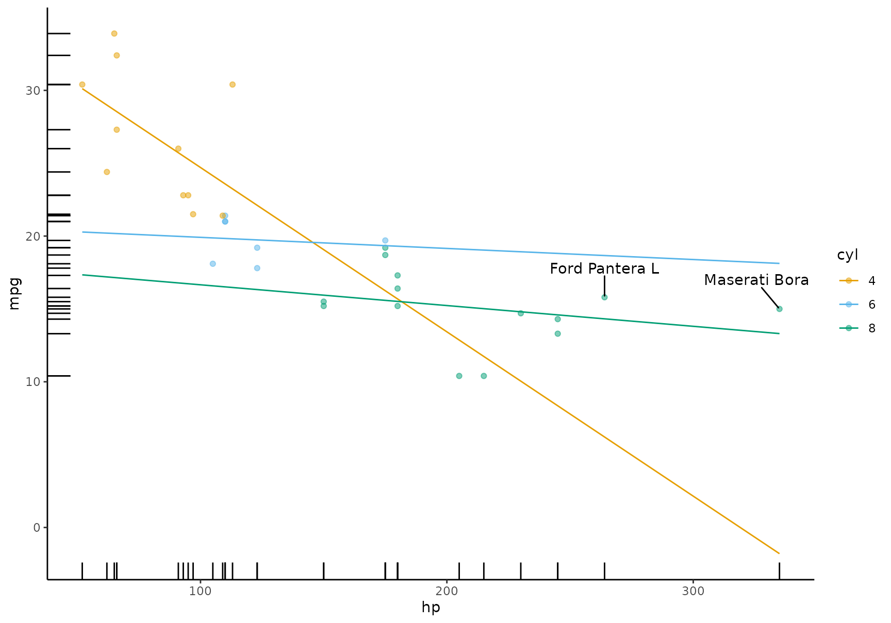
All the plotting functions work with all the model supported by the
marginaleffects package, so we can plot the output of a
logistic regression model. This plot shows the probability of survival
aboard the Titanic, for different ages and different ticket classes:
library(ggdist)
dat <- "https://vincentarelbundock.github.io/Rdatasets/csv/Stat2Data/Titanic.csv"
dat <- read.csv(dat)
mod <- glm(Survived ~ Age * PClass, data = dat, family = binomial)
plot_predictions(mod, condition = c("Age", "PClass")) +
geom_dots(
alpha = .8,
scale = .3,
pch = 18,
data = dat, aes(
x = Age,
y = Survived,
side = ifelse(Survived == 1, "bottom", "top")))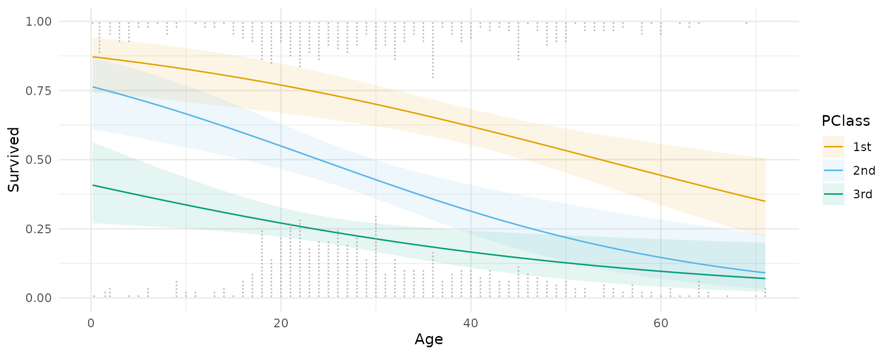
Thanks to Andrew Heiss who inspired this plot.
Designing effective data visualizations requires a lot of
customization to the specific context and data. The plotting functions
in marginaleffects offer a powerful way to iterate quickly
between plots and models, but they obviously cannot support all the
features that users may want. Thankfully, it is very easy to use the
slopes functions to generate datasets that can then be used
in ggplot2 or any other data visualization tool. Just use
the draw argument:
p <- plot_predictions(mod, condition = c("Age", "PClass"), draw = FALSE)
head(p)
#> rowid type estimate p.value conf.low conf.high Survived Age PClass
#> 1 1 link 0.8717909 1.032561e-05 0.7436448 0.9409650 0.4140212 0.17000 1st
#> 2 2 link 0.7632110 1.441860e-03 0.6107369 0.8687919 0.4140212 0.17000 2nd
#> 3 3 link 0.4079623 2.405455e-01 0.2700636 0.5620556 0.4140212 0.17000 3rd
#> 4 4 link 0.8658883 9.444731e-06 0.7388160 0.9364544 0.4140212 1.61551 1st
#> 5 5 link 0.7501603 1.732204e-03 0.6014676 0.8566022 0.4140212 1.61551 2nd
#> 6 6 link 0.3971177 1.654715e-01 0.2674727 0.5430195 0.4140212 1.61551 3rdFits and smooths
We can compare the model predictors with fits and smoothers using the
geom_smooth() function from the ggplot2
package:
dat <- "https://vincentarelbundock.github.io/Rdatasets/csv/Stat2Data/Titanic.csv"
dat <- read.csv(dat)
mod <- glm(Survived ~ Age * PClass, data = dat, family = binomial)
plot_predictions(mod, condition = c("Age", "PClass")) +
geom_smooth(data = dat, aes(Age, Survived), method = "lm", se = FALSE, color = "black") +
geom_smooth(data = dat, aes(Age, Survived), se = FALSE, color = "black")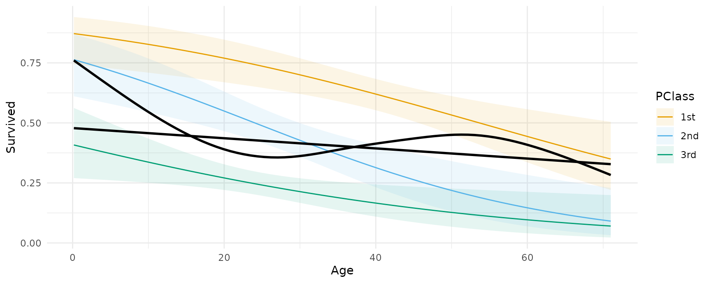
Groups and categorical outcomes
In some models, marginaleffects functions generate
different estimates for different groups, such as categorical outcomes.
For example,
library(MASS)
mod <- polr(factor(gear) ~ mpg + hp, data = mtcars)
predictions(mod)
#>
#> Group Estimate Std. Error z Pr(>|z|) 2.5 % 97.5 %
#> 3 0.531596 0.112672 4.7181 2.3807e-06 0.3107631 0.75243
#> 3 0.531596 0.112672 4.7181 2.3807e-06 0.3107631 0.75243
#> 3 0.449160 0.120036 3.7419 0.00018264 0.2138946 0.68443
#> 3 0.494359 0.111137 4.4482 8.6591e-06 0.2765352 0.71218
#> 3 0.421265 0.113957 3.6967 0.00021843 0.1979129 0.64462
#> --- 86 rows omitted. See ?avg_predictions and ?print.marginaleffects ---
#> 5 0.689397 0.195008 3.5352 0.00040744 0.3071872 1.07161
#> 5 0.164953 0.130661 1.2624 0.20678702 -0.0911382 0.42104
#> 5 0.124546 0.069841 1.7833 0.07453997 -0.0123394 0.26143
#> 5 0.377925 0.326811 1.1564 0.24751620 -0.2626125 1.01846
#> 5 0.066739 0.045573 1.4644 0.14307241 -0.0225821 0.15606
#>
#> Prediction type: probs
#> Columns: rowid, type, group, estimate, std.error, statistic, p.value, conf.low, conf.high, gear, mpg, hpWe can plot those estimates in the same way as before, by specifying
group as one of the conditional variable, or by adding that
column to a facet_wrap() call:
plot_predictions(mod, condition = c("mpg", "group"), type = "probs", vcov = FALSE)
plot_predictions(mod, condition = "mpg", type = "probs", vcov = FALSE) +
facet_wrap(~ group)
plot() and marginaleffects objects
Some users may feel inclined to call plot() on a object
produced by marginaleffects object. Doing so will generate
an informative error like this one:
mod <- lm(mpg ~ hp * wt * factor(cyl), data = mtcars)
p <- predictions(mod)
plot(p)
#> Error: Please use the `plot_predictions()` function.The reason for this error is that the user query is underspecified.
marginaleffects allows users to compute so many quantities
of interest that it is not clear what the user wants when they simply
call plot(). Adding several new arguments would compete
with the main plotting functions, and risk sowing confusion. The
marginaleffects developers thus decided to support one main
path to plotting: plot_predictions(),
plot_comparisons(), and plot_slopes().
That said, it may be useful to remind users that all
marginaleffects output are standard “tidy” data frames.
Although they get pretty-printed to the console, all the listed columns
are accessible via standard R operators. For example:
p <- avg_predictions(mod, by = "cyl")
p
#>
#> cyl Estimate Std. Error z Pr(>|z|) 2.5 % 97.5 %
#> 4 26.66 0.6951 38.36 < 2.22e-16 25.30 28.03
#> 6 19.74 0.8714 22.66 < 2.22e-16 18.03 21.45
#> 8 15.10 0.6162 24.51 < 2.22e-16 13.89 16.31
#>
#> Prediction type: response
#> Columns: type, cyl, estimate, std.error, statistic, p.value, conf.low, conf.high
p$estimate
#> [1] 26.66364 19.74286 15.10000
p$std.error
#> [1] 0.6951236 0.8713835 0.6161612
p$conf.low
#> [1] 25.30122 18.03498 13.89235This allows us to plot all results very easily with standard plotting functions:
plot_predictions(mod, by = "cyl")
plot(p$cyl, p$estimate)
ggplot(p, aes(x = cyl, y = estimate, ymin = conf.low, ymax = conf.high)) +
geom_pointrange()